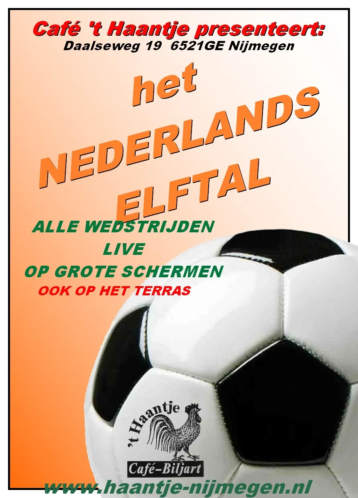

Nieuws ·
EK voetbal kijk je bij Cafe 't Haantje

EK voetbal kijk je natuurlijk bij Cafe ’t Haantje
Nijmegen maakt zich op voor het EK Voetbal 2024 en Café Het Haantje is dé plek om alle wedstrijden te volgen. Dit gezellige café, gelegen in het hart van Nijmegen, opent zijn deuren voor voetbalfans die samen de spanning en sensatie van het toernooi willen beleven.
Vanaf de openingswedstrijd op 14 juni tot en met de finale op 14 juli, zorgt Café Het Haantje voor een ongeëvenaarde kijkervaring. Met grote schermen, een uitstekende geluidsinstallatie en een sfeer die alleen maar beter wordt met goed gezelschap, is dit de ideale plek voor zowel fervente voetbalfans als gelegenheidssupporters.
We hebben alles in huis om er een onvergetelijk toernooi van te maken. Van verfrissende drankjes tot smakelijke hapjes, wij zorgen ervoor dat het onze gasten aan niets ontbreekt. Bovendien creëren we een veilige en gezellige omgeving waar iedereen zich thuis kan voelen.”
Naast de wedstrijden organiseert Café Het Haantje diverse activiteiten en thematische avonden om de feestvreugde te vergroten. Denk hierbij aan voetbalquizzen, prijsuitreikingen en speciale avonden met live muziek.
Mis geen enkel moment van het EK Voetbal 2024 en kom naar Café Het Haantje, waar elke wedstrijd een feestje is. Volg het toernooi met vrienden, familie en andere voetbalfans in een sfeer die je alleen hier kunt ervaren. Zorg dat je op tijd bent om de beste plekken te bemachtigen en geniet van een onvergetelijke zomer vol voetbalplezier.
Voor meer informatie en het volledige programma, bezoek de Facebook-pagina van Café Het Haantje of loop gewoon binnen. Tot ziens bij Het Haantje en laten we samen juichen voor ons favoriete team!